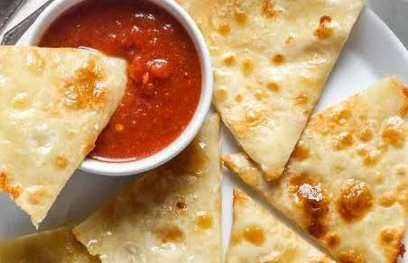

A dish that has stood the test of time, cheese quesadillas are a wonderful dish to add to your arsenal. With their signature cheese pull and golden brown crust, we know you will love this easy and quick dish!
Whether they are being served as an quick appetizer or a fun kids meal, cheese quesadillas will put a smile on the face of all of your friends and family!
Ingredients
- Large tortillas
- Shredded mozarella cheese
- Extra virgin olive oil
Steps
- First, heat a cast iron skillet on a stove top.
- Add olive oil, and let it warm with the skillet.
- Place tortilla on oil.
- Layer a generous serving of cheese on tortilla.
- place second tortilla on top.
- When first side has browned, flip the quesadilla.
- When second side is browned, remove from pan and enjoy.
- Repeat as many times as you like.